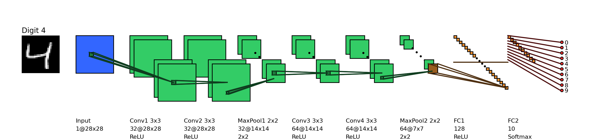
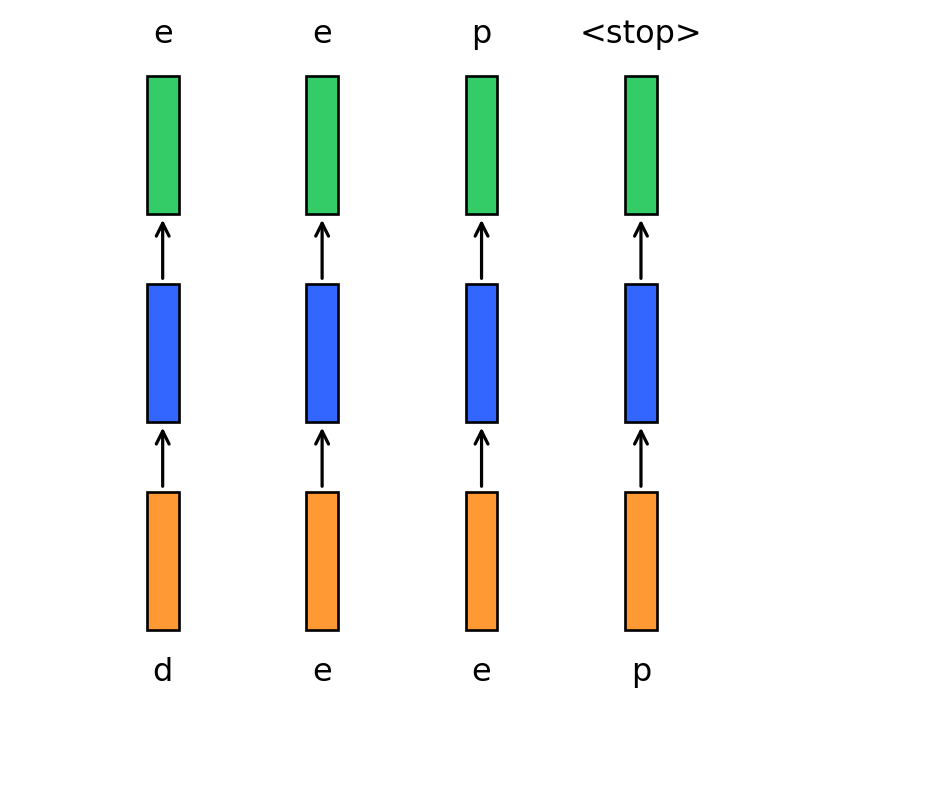
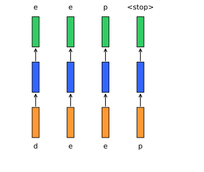
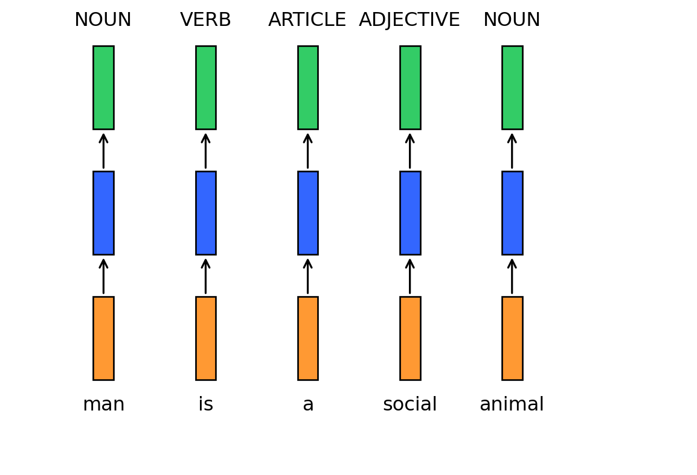
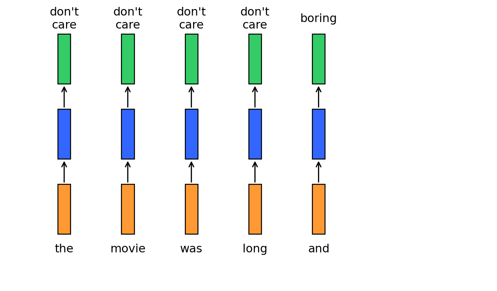
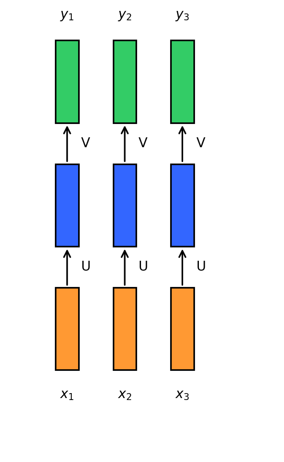

Perplexity can be understood as the model’s effective uncertainty over the next token.
Best case: model assigns probability 1 to the correct token
→ perplexity = 1
Worst case: model assigns probability 0 to the correct token
→ perplexity approaches infinity
Uniform baseline: model spreads probability equally across all tokens
→ perplexity equals vocabulary size.
Why Perplexity Is Useful
Perplexity gives us:
a length-normalized measure of prediction quality
comparability across different text sequences
an information-theoretic interpretation of model uncertainty
But it does not directly measure:
usefulness
factuality
helpfulness
alignment with human preferences
That is why later LLM systems require additional control layers such as instruction tuning and RLHF.
Bridge to Transformers and Prompting
Language modeling gives us the foundational objective:P(x_t \mid x_{<t})
Transformers give us a scalable architecture for estimating it.
Prompting then becomes a way to shape the context so that the next-token distribution produces useful outputs.
Sequence Learning Problems
Fixed-size inputs in earlier models
In feedforward and convolutional neural networks the size of the input was always fixed.

For example, we fed fixed size (28 \times 28) images to convolutional neural networks for image classification (MNIST).
Similarly in word2vec, we fed a fixed window (k) of words to the network.
Further, each input to the network was independent of the previous or future inputs.
For example, the computations, outputs and decisions for two successive images are completely independent of each other.
Auto-completion as a sequence problem

Figure 1. Diagram showing a sequence of inputs and outputs for an auto-completion task.
In many applications the input is not of a fixed size.
Further successive inputs may not be independent of each other.
For example, consider the task of auto completion.
Given the first character d you want to predict the next character e and so on.
Properties of sequence inputs

Figure 2. “Diagram showing a sequence of inputs and outputs for an auto-completion task.”
Successive inputs are no longer independent (while predicting e you would want to know what the previous input was in addition to the current input).
The length of the inputs and the number of predictions you need to make is not fixed (for example, “learn”, “deep”, “machine” have different number of characters).
Each network (orange–blue–green structure) is performing the same task (input: character, output: character).
These are known as sequence learning problems.
We need to look at a sequence of (dependent) inputs and produce an output (or outputs).
Each input corresponds to one time step.
Part-of-speech tagging as a sequence task

Figure 3. Diagram showing a sequence of inputs and outputs for a part-of-speech tagging task.
Consider the task of predicting the part of speech tag (noun, adverb, adjective, verb) of each word in a sentence.
Once we see an adjective (social) we are almost sure that the next word should be a noun (man).
Thus the current output (noun) depends on the current input as well as the previous input.
Further the size of the input is not fixed (sentences could have arbitrary number of words).
Notice that here we are interested in producing an output at each time step.
Each network is performing the same task (input: word, output: tag).
Sentiment as a sequence-to-label problem

Figure 4. Diagram showing a sentiment as a sequence to label problem
Consider sentiment classification for a sentence like “The movie was boring and …”.
The final sentiment depends on the entire sequence of words.
Intermediate words like “boring” strongly influence the final decision.
Again, the input length is variable, but we may only need a single output label at the end.
Sequences could be composed of anything (not just words)
For example, a video could be treated as a sequence of images
We may want to look at the entire sequence and detect the activity being performed
Recurrent Neural Networks
Modeling sequences with recurrent neural networks
Important
How do we model such tasks involving sequences?
Account for dependence between inputs
Account for variable number of inputs
Make sure that the function executed at each time step is the same
We will focus on each of these to arrive at a model for dealing with sequences
Functional Model of Sequence

Diagram showing a sequence of inputs and outputs for an auto-completion task.
What is the function being executed at each time step (i)?